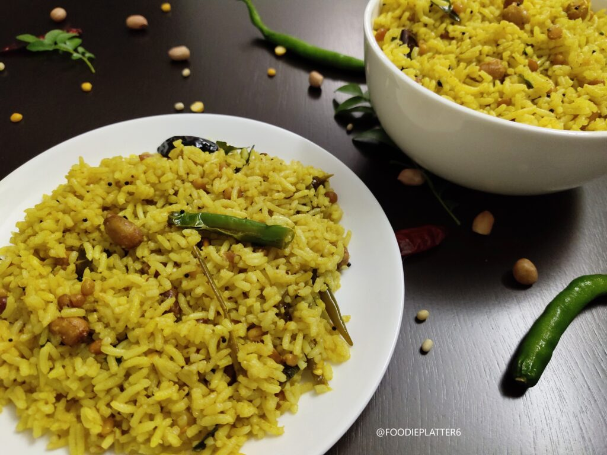

Hi, I'm Supriya. I have completed my under graduation in Electronics and Communication Engineering at Avanthi Institute of Engineering and Technology Which is affliated to JNTUH. I have 1.8years of experience in IT field now I'm here to Pursue my Masters in Computer Science.
My favorite food is Tamarind Rice. I Love Tamarind rice because rice is very flavorful and tastes spicy, slightlyn sweet and sour. It is traditional south Indian dish made on occasions to serve as a main meal.
